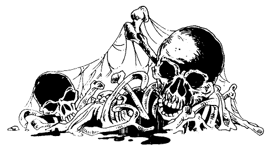

Qu'avez-vous choisi ? Le pain et les gâteaux vous font gagner 2 points d'ENDURANCE ; la viande et le poisson séché, ainsi que le fromage, 1 point d'ENDURANCE ; les fruits et le vin, aucun point d'ENDURANCE. Le vin vous fait perdre 1 point d'HABILETÉ ; mais si vous avez choisi d'en boire, ôtez 2 points de votre total de PEUR (pour le courage que vous trouvez au fond de la bouteille !) Si vous avez mangé du fromage ou bu du vin blanc . Si vous avez seulement goûté au poisson séché ou bu du vin rouge . Si vous n'avez choisi rien de cela .
